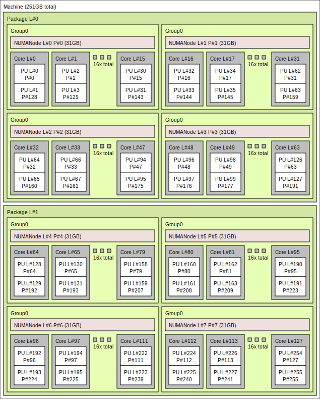

Slurm¶
CSCS uses the Slurm workload manager to efficiently schedule and manage jobs on Alps vClusters. Slurm is an open-source, highly scalable job scheduler that allocates computing resources, queues user jobs, and optimizes workload distribution across the cluster. It supports advanced scheduling policies, job dependencies, resource reservations, and accounting, making it well-suited for high-performance computing environments.
Refer to the Quick Start User Guide for commonly used terminology and commands.
-
Configuring jobs
Specific guidance for configuring Slurm jobs on different node types.
-
Node sharing
Guides on how to effectively use all resources on nodes by running more than one job per node.
Accounts and resources¶
Slurm associates each job with a CSCS project in order to perform accounting.
The project to use for accounting is specified using the --account/-A flag.
If no job is specified, the primary project is used as the default.
Which projects am I a member of?
Users often are part of multiple projects, and by extension their associated groupd_id groups.
You can get a list of your groups using the id command in the terminal:
bobsmith is in three projects (g152, g174 and vasp6), with the project g152 being their primary project.
What is my primary project?
In the terminal, use the following command to find your primary group:
$ srun -A g123 -n4 -N1 ./run
$ srun --account=g123 -n4 -N1 ./run
$ sbatch --account=g123 ./job.sh
#!/bin/bash
#SBATCH --account=g123
#SBATCH --job-name=example-%j
#SBATCH --time=00:30:00
#SBATCH --nodes=4
...
Note
The flags --account and -Cmc that were required on the old Eiger cluster are no longer required.
Prioritisation and scheduling¶
Job priorities are determined based on each project’s resource usage relative to its quarterly allocation, as well as in comparison to other projects. An aging factor is also applied to each job in the queue to ensure fairness over time.
Since users from various projects are continuously submitting jobs, the relative priority of jobs is dynamic and may change frequently. As a result, estimated start times are approximate and subject to change based on new job submissions.
Additionally, short-duration jobs may be selected for backfilling — a process where the scheduler fills in available time slots while preparing to run a larger, higher-priority job.
Partitions¶
At CSCS, Slurm is configured to accommodate the diverse range of node types available in our HPC clusters. These nodes vary in architecture, including CPU-only nodes and nodes equipped with different types of GPUs. Because of this heterogeneity, Slurm must be tailored to ensure efficient resource allocation, job scheduling, and workload management specific to each node type.
Each type of node has different resource constraints and capabilities, which Slurm takes into account when scheduling jobs. For example, CPU-only nodes may have configurations optimized for multi-threaded CPU workloads, while GPU nodes require additional parameters to allocate GPU resources efficiently. Slurm ensures that user jobs request and receive the appropriate resources while preventing conflicts or inefficient utilization.
How to check the partitions and number of nodes therein?
You can check the size of the system by running the following command in the terminal:
$ sinfo --format "| %20R | %10D | %10s | %10l | %10A |"
| PARTITION | NODES | JOB_SIZE | TIMELIMIT | NODES(A/I) |
| debug | 32 | 1-2 | 30:00 | 3/29 |
| normal | 1266 | 1-infinite | 1-00:00:00 | 812/371 |
| xfer | 2 | 1 | 1-00:00:00 | 1/1 |
A) and the number of jobs that are idle (I).
Debug partition¶
The Slurm debug partition is useful for quick turnaround workflows. The partition has a short maximum time (timelimit can be seen with sinfo -p debug), and a low number of maximum nodes (the MaxNodes can be seen with scontrol show partition=debug).
Normal partition¶
This is the default partition, and will be used when you do not explicitly set a partition.
This is the correct choice for standard jobs. The maximum time is usually set to 24 hours (sinfo -p normal for timelimit), and the maximum nodes can be as much as nodes are available.
The following sections will provide detailed guidance on how to use Slurm to request and manage CPU cores, memory, and GPUs in jobs. These instructions will help users optimize their workload execution and ensure efficient use of CSCS computing resources.
Interactive jobs¶
Single node shell¶
It is possible to spawn a shell on a compute node to run commands interactively.
This is useful to e.g. compile applications, build container images, etc.
To start an interactive shell on a compute node, you can use the--pty flag and execute your shell:
# run a bash shell on a single node
$ srun --pty bash
# use a partition for small jobs: the debug partition on most Alps system
# is good for this:
$ srun --pty --partition=debug bash
Info
The example above executes the bash shell, which is the default shell for most users on Alps.
It is also possible to execute a different shell, for example zsh.
Multi node allocation¶
Sometimes it is useful to first allocate nodes, and then interactively submit jobs to the allocated nodes.
To allocate nodes, you should use the command salloc.
debug partition.
It is not mandatory to use the debug partition with salloc, you can use any partition.
However the debug partition usually has a shorter waiting time to allocate the requested resources.
Now you can run several commands, and they will all run in the same allocation, i.e. they will not go through the SLURM queue.
This will first run the command hostname on both nodes, and then it will run as second job the command date.
This allows you to quickly iterate without going for every command through the SLURM queue.
Do not forget to exit the shell, once you are done, otherwise the allocation will consume your node hours compute budget.
If in doubt, use the commands squeue --me to verify if your allocation is still running, and scancel <JOB-ID> to cancel the job (i.e. the allocation).
Note
The command salloc will open a new shell, therefore you can free the allocation with exit.
The newly opened shell will have many SLURM_* environment variables set, most important is the variable SLURM_JOB_ID,
which is used to submit the following srun calls to the allocation.
Connecting to node in a running job¶
It is possible to connect to a node in a running job.
First you will need the jobid, which you can find e.g. via squeue --me.
To connect to the first node of the job use the command
--nodelist=nidXXXXXX.
Affinity¶
The following sections will document how to use Slurm on different compute nodes available on Alps. To demonstrate the effects different Slurm parameters, we will use a little command line tool affinity that prints the CPU cores and GPUs that are assigned to each MPI rank in a job, and which node they are run on.
We strongly recommend using a tool like affinity to understand and test the Slurm configuration for jobs, because the behavior of Slurm is highly dependent on the system configuration. Parameters that worked on a different cluster—or with a different Slurm version or configuration on the same cluster—are not guaranteed to give the same results.
It is straightforward to build the affinity tool to experiment with Slurm configurations.
$ uenv start prgenv-gnu/24.11:v2 --view=default #(1)
$ git clone https://github.com/bcumming/affinity.git
$ cd affinity; mkdir build; cd build;
$ CC=gcc CXX=g++ cmake .. #(2)
$ CC=gcc CXX=g++ cmake .. -DAFFINITY_GPU_BACKEND=cuda #(3)
$ CC=gcc CXX=g++ cmake .. -DAFFINITY_GPU_BACKEND=rocm #(4)
-
Affinity can be built using
prgenv-gnuon all clusters. -
By default affinity will build with MPI support and no GPU support: configure with no additional arguments on a CPU-only system like Eiger.
-
Enable CUDA support on systems that provide NVIDIA GPUs.
-
Enable ROCM support on systems that provide AMD GPUs.
The build generates the following executables:
affinity.omp: tests thread affinity with no MPI (always built).affinity.mpi: tests thread affinity with MPI (built by default).affinity.cuda: tests thread and GPU affinity with MPI (built with-DAFFINITY_GPU_BACKEND=cuda).affinity.rocm: tests thread and GPU affinity with MPI (built with-DAFFINITY_GPU_BACKEND=rocm).
Testing CPU affinity
Test CPU affinity (this can be used on both CPU and GPU enabled nodes).
$ uenv start prgenv-gnu/24.11:v2 --view=default
$ srun -n8 -N2 -c72 ./affinity.mpi
affinity test for 8 MPI ranks
rank 0 @ nid006363: thread 0 -> cores [ 0: 71]
rank 1 @ nid006363: thread 0 -> cores [ 72:143]
rank 2 @ nid006363: thread 0 -> cores [144:215]
rank 3 @ nid006363: thread 0 -> cores [216:287]
rank 4 @ nid006375: thread 0 -> cores [ 0: 71]
rank 5 @ nid006375: thread 0 -> cores [ 72:143]
rank 6 @ nid006375: thread 0 -> cores [144:215]
rank 7 @ nid006375: thread 0 -> cores [216:287]
In this example there are 8 MPI ranks:
- ranks
0:3are on nodenid006363; - ranks
4:7are on nodenid006375; - each rank has 72 threads numbered
0:71; - all threads on each rank have affinity with the same 72 cores;
- each rank gets 72 cores, e.g. rank 1 gets cores
72:143on nodenid006363.
Testing GPU affinity
Use affinity.cuda or affinity.rocm to test on GPU-enabled systems.
$ srun -n4 -N1 ./affinity.cuda #(1)
GPU affinity test for 4 MPI ranks
rank 0 @ nid005555
cores : [0:7]
gpu 0 : GPU-2ae325c4-b542-26c2-d10f-c4d84847f461
gpu 1 : GPU-5923dec6-288f-4418-f485-666b93f5f244
gpu 2 : GPU-170b8198-a3e1-de6a-ff82-d440f71c05da
gpu 3 : GPU-0e184efb-1d1f-f278-b96d-15bc8e5f17be
rank 1 @ nid005555
cores : [72:79]
gpu 0 : GPU-2ae325c4-b542-26c2-d10f-c4d84847f461
gpu 1 : GPU-5923dec6-288f-4418-f485-666b93f5f244
gpu 2 : GPU-170b8198-a3e1-de6a-ff82-d440f71c05da
gpu 3 : GPU-0e184efb-1d1f-f278-b96d-15bc8e5f17be
rank 2 @ nid005555
cores : [144:151]
gpu 0 : GPU-2ae325c4-b542-26c2-d10f-c4d84847f461
gpu 1 : GPU-5923dec6-288f-4418-f485-666b93f5f244
gpu 2 : GPU-170b8198-a3e1-de6a-ff82-d440f71c05da
gpu 3 : GPU-0e184efb-1d1f-f278-b96d-15bc8e5f17be
rank 3 @ nid005555
cores : [216:223]
gpu 0 : GPU-2ae325c4-b542-26c2-d10f-c4d84847f461
gpu 1 : GPU-5923dec6-288f-4418-f485-666b93f5f244
gpu 2 : GPU-170b8198-a3e1-de6a-ff82-d440f71c05da
gpu 3 : GPU-0e184efb-1d1f-f278-b96d-15bc8e5f17be
$ srun -n4 -N1 --gpus-per-task=1 ./affinity.cuda #(2)
GPU affinity test for 4 MPI ranks
rank 0 @ nid005675
cores : [0:7]
gpu 0 : GPU-a16a8dac-7661-a44b-c6f8-f783f6e812d3
rank 1 @ nid005675
cores : [72:79]
gpu 0 : GPU-ca5160ac-2c1e-ff6c-9cec-e7ce5c9b2d09
rank 2 @ nid005675
cores : [144:151]
gpu 0 : GPU-496a2216-8b3c-878e-e317-36e69af11161
rank 3 @ nid005675
cores : [216:223]
gpu 0 : GPU-766e3b8b-fa19-1480-b02f-0dfd3f2c87ff
-
Test GPU affinity: note how all 4 ranks see the same 4 GPUs.
-
Test GPU affinity: note how the
--gpus-per-task=1parameter assigns a unique GPU to each rank.
Quick affinity checks
The Slurm flag --cpu-bind=verbose prints information about MPI ranks and their thread affinity.
The mask it prints is not very readable, but it can be used with the true command to quickly test Slurm parameters without building the Affinity tool.
$ srun --cpu-bind=verbose -c32 -n4 -N1 --hint=nomultithread -- true
cpu-bind=MASK - nid002156, task 0 0 [147694]: mask 0xffffffff set
cpu-bind=MASK - nid002156, task 1 1 [147695]: mask 0xffffffff0000000000000000 set
cpu-bind=MASK - nid002156, task 2 2 [147696]: mask 0xffffffff00000000 set
cpu-bind=MASK - nid002156, task 3 3 [147697]: mask 0xffffffff000000000000000000000000 set
You can also check GPU affinity by inspecting the value of the CUDA_VISIBLE_DEVICES environment variable.
Slurm features¶
Slurm allows specifying constraints for jobs, which can be used to change features available on nodes in a job.
CSCS implements a few custom features, described below, that can be selected on certain clusters.
To check which features are available on a cluster, for example on the normal partition, use sinfo:
$ sinfo --partition normal --format %b
ACTIVE_FEATURES
gh,gpu,thp_never,thp_always,thp_madvise,nvidia_vboost_enabled,nvidia_vboost_disabled
One or more constraints can be selected using the --constraint/-C flag of sbatch or srun:
Transparent hugepages¶
The THP Slurm feature is only available on GH200 nodes
Transparent hugepages (THP) are a Linux kernel feature that allows automatically coalescing pages into huge pages without the user application explicitly asking for hugepages:
Performance critical computing applications dealing with large memory working sets are already running on top of libhugetlbfs and in turn hugetlbfs. Transparent HugePage Support (THP) is an alternative mean of using huge pages for the backing of virtual memory with huge pages that supports the automatic promotion and demotion of page sizes and without the shortcomings of hugetlbfs.
While this feature generally improves performance, we have observed degrading application performance with the THP feature enabled due to the page coalescing blocking progress on certain operations. An example of this is ICON, a latency-sensitive application where small delays can can cause large performance drops.
THP support is enabled by default, and the current setting can be checked with:
A detailed explanation of how the different options behave can be found in the THP documentation.
The available Slurm features to select the THP mode are listed below:
| Kernel setting | Slurm constraint |
|---|---|
always |
thp_always (default) |
madvise |
thp_madvise |
never |
thp_never |
NVIDIA vboost¶
The NVIDIA vboost Slurm feature is only available on GH200 nodes
The NVIDIA NeMo documentation describes the vboost feature as:
NVIDIA GPUs support a CPU core clock boost mode, which increases the core clock rate by reducing the off-chip memory clock rate. This is particularly beneficial for LLMs, which are typically compute throughput-bound.
The vboost slider is at 0 by default, and the current value can be checked checked with nvidia-smi:
$ nvidia-smi boost-slider --list
+-------------------------------------------------+
| GPU Boost Slider |
| GPU Slider Max Value Current Value |
|=================================================|
| 0 vboost 4 0 |
+-------------------------------------------------+
| 1 vboost 4 0 |
+-------------------------------------------------+
| 2 vboost 4 0 |
+-------------------------------------------------+
| 3 vboost 4 0 |
+-------------------------------------------------+
The slider can be set to 1 using the nvidia_vboost_enable feature:
| vboost setting | Slurm constraint |
|---|---|
0 |
nvidia_vboost_disable (default) |
1 |
nvidia_vboost_enable |
NVIDIA GH200 GPU Nodes¶
The GH200 nodes on Alps have four GPUs per node, and Slurm job submissions must be configured appropriately to best make use of the resources. Applications that can saturate the GPUs with a single process per GPU should generally prefer this mode. Configuring Slurm jobs to use a single GPU per rank is also the most straightforward setup. Some applications perform badly with a single rank per GPU, and require use of NVIDIA’s Multi-Process Service (MPS) to oversubscribe GPUs with multiple ranks per GPU.
The best Slurm configuration is application- and workload-specific, so it is worth testing which works best in your particular case. See Scientific Applications for information about recommended application-specific Slurm configurations.
Warning
The GH200 nodes have their GPUs configured in “default” compute mode. The “default” mode is used to avoid issues with certain containers. Unlike “exclusive process” mode, “default” mode allows multiple processes to submit work to a single GPU simultaneously. This also means that different ranks on the same node can inadvertently use the same GPU leading to suboptimal performance or unused GPUs, rather than job failures.
Some applications benefit from using multiple ranks per GPU. However, MPS should be used in these cases.
If you are unsure about which GPU is being used for a particular rank, print the CUDA_VISIBLE_DEVICES variable, along with e.g. SLURM_LOCALID, SLURM_PROCID, and SLURM_NODEID variables, in your job script.
If the variable is unset or empty all GPUs are visible to the rank and the rank will in most cases only use the first GPU.
One rank per GPU¶
Configuring Slurm to use one GH200 GPU per rank is easiest done using the --ntasks-per-node=4 and --gpus-per-task=1 Slurm flags.
For advanced users, using --gpus-per-task is equivalent to setting CUDA_VISIBLE_DEVICES to SLURM_LOCALID, assuming the job is using four ranks per node.
The examples below launch jobs on two nodes with four ranks per node using sbatch and srun:
#!/bin/bash
#SBATCH --job-name=gh200-single-rank-per-gpu
#SBATCH --nodes=2
#SBATCH --ntasks-per-node=4
#SBATCH --gpus-per-task=1
srun <application>
Omitting the --gpus-per-task results in CUDA_VISIBLE_DEVICES being unset, which will lead to most applications using the first GPU on all ranks.
Multiple ranks per GPU¶
Using multiple ranks per GPU can improve performance e.g. of applications that don’t generate enough work for a GPU using a single rank, or ones that scale badly to all 72 cores of the Grace CPU. In these cases Slurm jobs must be configured to assign multiple ranks to a single GPU. This is best done using NVIDIA’s Multi-Process Service (MPS). To use MPS, launch your application using the following wrapper script, which will use one rank per node to start an MPS daemon for each GPU of the node, and assign GPUs to ranks according to the CPU mask of a rank, ensuring the closest GPU is used:
#!/bin/bash
set -eu
mps_prefix="/tmp/$(id -un)/slurm-${SLURM_JOBID}.${SLURM_STEPID}/nvidia"
num_gpus=4
# Reset CUDA environment variables to default values without MPS
export CUDA_DEVICE_MAX_CONNECTIONS=8
export CUDA_DEVICE_MAX_COPY_CONNECTIONS=8
# Each GPU is attached to the corresponding NUMA node
# Disable HWLOC_KEEP_NVIDIA_GPU_NUMA_NODES to avoid GPU NUMA nodes appearing in the list of CUDA devices
numa_node=$(HWLOC_KEEP_NVIDIA_GPU_NUMA_NODES=0 hwloc-calc --physical --intersect NUMAnode $(hwloc-bind --get --taskset))
# We expect exactly one non-negative integer for the NUMA node
if ! [[ "${numa_node}" =~ ^[0-9]+$ ]]; then
echo "The MPS wrapper script only works when the process mask of the rank is adjacent to exactly one GPU. The CPU mask is $(hwloc-bind --get --taskset) and the list of adjacent numa nodes is ${numa_node} for rank ${SLURM_PROCID}."
exit 1
fi
function start_daemon {
export CUDA_MPS_PIPE_DIRECTORY=${mps_prefix}-mps-${1}
export CUDA_MPS_LOG_DIRECTORY=${mps_prefix}-log-${1}
mkdir -p "${CUDA_MPS_PIPE_DIRECTORY}"
mkdir -p "${CUDA_MPS_LOG_DIRECTORY}"
CUDA_VISIBLE_DEVICES=${1} nvidia-cuda-mps-control -d
}
# Start MPS control daemons from a single rank per node, one for each GPU on the node
if [[ $SLURM_LOCALID -eq 0 ]]; then
# We attempt to kill previous MPS instances, but if we can't (either none
# have been started or they are unkillable) we ignore it and attempt to run
# anyway
pkill --uid $(id -un) '^nvidia-cuda-mps-' || true
for i in $(seq 0 $((num_gpus - 1))); do
start_daemon ${i}
done
fi
# Set MPS options for this rank. Each rank will access the MPS of the GPU
# corresponding to the NUMA node. CUDA_VISIBLE_DEVICES should not be set. The
# chosen MPS determines which device is visible.
export CUDA_MPS_PIPE_DIRECTORY=${mps_prefix}-mps-${numa_node}
export CUDA_MPS_LOG_DIRECTORY=${mps_prefix}-log-${numa_node}
# Wait until the control daemon for our rank is up. The daemon creates a pid
# file which we can wait for. See
# https://docs.nvidia.com/deploy/mps/appendix-tools-and-interface-reference.html.
# Wait up to mps_pid_file_timeout seconds for the pid file to be created. In
# jobs with a large number of ranks some ranks may take a long time to start. If
# that happens consider increasing the timeout.
mps_pid_file_timeout=120
pid_file="${CUDA_MPS_PIPE_DIRECTORY}/nvidia-cuda-mps-control.pid"
if ! timeout ${mps_pid_file_timeout} bash -c "until [[ -f \"${pid_file}\" ]]; do sleep 1; done"; then
echo "The MPS wrapper script timed out waiting for MPS pid file ${pid_file} on rank ${SLURM_PROCID}. MPS daemon likely did not start correctly or the rank starting the MPS daemons took too long to start."
exit 1
fi
# Run the command
# We are using `exec`, because we want e.g. signals to be forwarded directly to the application, and not this wrapper script
exec "$@"
One limitation of the script above is that CPU bindings only belong to one NUMA domain. It is currently up to the user to ensure that this limitation is respected when configuring Slurm jobs.
CUDA environment variables
The MPS wrapper script above resets the CUDA_DEVICE_MAX_CONNECTIONS and CUDA_DEVICE_MAX_COPY_CONNECTIONS environment variables to their default values.
If your application requires different values for these variables, modify the script accordingly.
Save the above script as mps-wrapper.sh and make it executable with chmod +x mps-wrapper.sh.
If the mps-wrapper.sh script is in the current working directory, you can then launch jobs using MPS for example as follows:
#!/bin/bash
#SBATCH --job-name=gh200-multiple-ranks-per-gpu
#SBATCH --nodes=2
#SBATCH --ntasks-per-node=32
#SBATCH --cpus-per-task=8
srun ./mps-wrapper.sh <application>
Note that in the example job above:
--gpus-per-nodeis not set at all; themps-wrapper.shscript ensures that the right GPU is visible for each rank usingCUDA_VISIBLE_DEVICES--ntasks-per-nodeis set to 32; this results in 8 ranks per GPU--cpus-per-taskis set to 8; this ensures that threads are not allowed to migrate across the whole GH200 node
The configuration that is optimal for your application may be different.
GH200 power capping¶
Info
This power capping functionality is an experimental feature developed by CSCS. It is currently being tested with key users on the Starlex test cluster.
This documentation will be updated once it has been deployed onto the production clusters.
The combined power of each GH200 module (CPU + GPU) on Alps is capped at approximately 660 W. The modules are configured such that CPU power requirements have priority over GPU requirements, which can impact GPU performance for applications that overlap CPU and GPU computations. If an application uses many CPU cores concurrently with the GPU, there may not be sufficient power available for the GPU.
To mitigate this, CSCS provides a Slurm option that allows setting a power cap for the CPU. However, this also limits CPU power when the GPU is not in use. Therefore, this feature should only be used for applications that use both CPU and GPU simultaneously, and it may require experimentation with different settings to achieve optimal performance.
The CPU power cap is set using --power-cap=<value>, where <value> is the power cap in watts, in the range 50–300.
It can be set either for the entire job in an sbatch script:
or for an individual job step using srun:Warning
If --power-cap is specified both in sbatch and in srun, the value set in srun takes precedence.
This allows fine-tuning the CPU power cap for individual job steps.
However, when multiple srun commands are executed in parallel (for example using background execution with &), each srun may overwrite the currently active power cap.
In this case, the last srun that applies its setting determines the effective power cap.
Running multiple parallel srun commands with the same --power-cap value is safe.
Using different values in parallel srun commands may lead to unintended behavior and should be avoided.
AMD CPU nodes¶
Alps has nodes with two AMD Epyc Rome CPU sockets per node for CPU-only workloads, most notably in the Eiger cluster provided by the HPC Platform. For a detailed description of the node hardware, see the AMD Rome node hardware documentation.
Node description
- The node has 2 x 64 core sockets
- Each socket is divided into 4 NUMA regions
- the 16 cores in each NUMA region have faster memory access to their of 32 GB
- Each core has two processing units (PUs)

Each MPI rank is assigned a set of cores on a node, and Slurm provides flags that can be used directly as flags to srun, or as arguments in an sbatch script.
Here are some basic flags that we will use to distribute work.
| flag | meaning |
|---|---|
-n, --ntasks |
The total number of MPI ranks |
-N, --nodes |
The total number of nodes |
--ntasks-per-node |
The total number of nodes |
-c, --cpus-per-task |
The number of cores to assign to each rank. |
--hint=nomultithread |
Use only one PU per core |
Slurm is highly configurable
These are a subset of the most useful flags.
Call srun --help or sbatch --help to get a complete list of all the flags available on your target cluster.
Note that the exact set of flags available depends on the Slurm version, how Slurm was configured, and Slurm plugins.
The first example assigns 2 MPI ranks per node, with 64 cores per rank, with the two PUs per core:
# one node
$ srun -n2 -N1 -c64 ./affinity.mpi
affinity test for 2 MPI ranks
rank 0 @ nid002199: thread 0 -> cores [ 0: 31,128:159]
rank 1 @ nid002199: thread 0 -> cores [ 64: 95,192:223]
# two nodes
$ srun -n4 -N2 -c64 ./affinity.mpi
affinity test for 4 MPI ranks
rank 0 @ nid001512: thread 0 -> cores [ 0: 31,128:159]
rank 1 @ nid001512: thread 0 -> cores [ 64: 95,192:223]
rank 2 @ nid001515: thread 0 -> cores [ 0: 31,128:159]
rank 3 @ nid001515: thread 0 -> cores [ 64: 95,192:223]
Note
In the above example we use --ntasks/-n and --nodes/-N.
It is possible to achieve the same effect using --nodes and --ntasks-per-node, for example the following both give 8 ranks on 4 nodes:
It is often more efficient to only run one task per core instead of the default two PU, which can be achieved using the --hint=nomultithread option.
$ srun -n2 -N1 -c64 --hint=nomultithread ./affinity.mpi
affinity test for 2 MPI ranks
rank 0 @ nid002199: thread 0 -> cores [ 0: 63]
rank 1 @ nid002199: thread 0 -> cores [ 64:127]
Always test
The best configuration for performance is highly application specific, with no one-size-fits-all configuration.
Take the time to experiment with --hint=nomultithread.
Memory on the node is divided into NUMA (non-uniform memory access) regions. The 256 GB of a standard-memory node are divided into 8 NUMA nodes of 32 GB, with 16 cores associated with each node:
- memory access is optimal when all the cores of a rank are on the same NUMA node;
- memory access to NUMA regions on the other socket are significantly slower.
How to investigate the NUMA layout of a node
Use the command numactl -H.
$ srun -n1 numactl -H
available: 8 nodes (0-7)
node 0 cpus: 0 1 2 3 4 5 6 7 8 9 10 11 12 13 14 15 128 129 130 131 132 133 134 135 136 137 138 139 140 141 142 143
node 0 size: 63733 MB
node 0 free: 62780 MB
node 1 cpus: 16 17 18 19 20 21 22 23 24 25 26 27 28 29 30 31 144 145 146 147 148 149 150 151 152 153 154 155 156 157 158 159
node 1 size: 64502 MB
node 1 free: 61774 MB
node 2 cpus: 32 33 34 35 36 37 38 39 40 41 42 43 44 45 46 47 160 161 162 163 164 165 166 167 168 169 170 171 172 173 174 175
node 2 size: 64456 MB
node 2 free: 63385 MB
node 3 cpus: 48 49 50 51 52 53 54 55 56 57 58 59 60 61 62 63 176 177 178 179 180 181 182 183 184 185 186 187 188 189 190 191
node 3 size: 64490 MB
node 3 free: 62613 MB
node 4 cpus: 64 65 66 67 68 69 70 71 72 73 74 75 76 77 78 79 192 193 194 195 196 197 198 199 200 201 202 203 204 205 206 207
node 4 size: 64502 MB
node 4 free: 63897 MB
node 5 cpus: 80 81 82 83 84 85 86 87 88 89 90 91 92 93 94 95 208 209 210 211 212 213 214 215 216 217 218 219 220 221 222 223
node 5 size: 64502 MB
node 5 free: 63769 MB
node 6 cpus: 96 97 98 99 100 101 102 103 104 105 106 107 108 109 110 111 224 225 226 227 228 229 230 231 232 233 234 235 236 237 238 239
node 6 size: 64502 MB
node 6 free: 63870 MB
node 7 cpus: 112 113 114 115 116 117 118 119 120 121 122 123 124 125 126 127 240 241 242 243 244 245 246 247 248 249 250 251 252 253 254 255
node 7 size: 64428 MB
node 7 free: 63712 MB
node distances:
node 0 1 2 3 4 5 6 7
0: 10 12 12 12 32 32 32 32
1: 12 10 12 12 32 32 32 32
2: 12 12 10 12 32 32 32 32
3: 12 12 12 10 32 32 32 32
4: 32 32 32 32 10 12 12 12
5: 32 32 32 32 12 10 12 12
6: 32 32 32 32 12 12 10 12
7: 32 32 32 32 12 12 12 10
node distances table shows that the cores have the fastest memory access to memory in their own region (10), and fast access (12) to NUMA regions on the same socket.
The cost of accessing memory of a NUMA node on the other socket is much higher (32).
Note that this command was run on a large-memory node that has 8 x 64 GB NUMA regions, for a total of 512 GB.
The examples above placed one rank per socket, which is not optimal for NUMA access, because cores assigned to each rank are spread over the 4 NUMA nodes on the socket. To constrain tasks to NUMA nodes, use 16 cores per task:
$ srun -n8 -N1 -c16 --hint=nomultithread ./affinity.mpi
affinity test for 8 MPI ranks
rank 0 @ nid002199: thread 0 -> cores [ 0: 15]
rank 1 @ nid002199: thread 0 -> cores [ 64: 79]
rank 2 @ nid002199: thread 0 -> cores [ 16: 31]
rank 3 @ nid002199: thread 0 -> cores [ 80: 95]
rank 4 @ nid002199: thread 0 -> cores [ 32: 47]
rank 5 @ nid002199: thread 0 -> cores [ 96:111]
rank 6 @ nid002199: thread 0 -> cores [ 48: 63]
rank 7 @ nid002199: thread 0 -> cores [112:127]
Always test
It might still be optimal for applications that have high threading efficiency and benefit from using fewer MPI ranks to have one rank per socket or even one one rank per node. Always test!
OpenMP¶
In the above examples all threads on each—we are effectively allowing the OS to schedule the threads on the available set of cores as it sees fit. This often gives the best performance, however sometimes it is beneficial to bind threads to explicit cores.
The OpenMP threading runtime provides additional options for controlling the pinning of threads to the cores assigned to each MPI rank.
Use the --omp flag with affinity.mpi to get more detailed information about OpenMP thread affinity.
For example, four MPI ranks on one node with four cores and four OpenMP threads:
$ export OMP_NUM_THREADS=4
$ srun -n4 -N1 -c4 --hint=nomultithread ./affinity.mpi --omp
affinity test for 4 MPI ranks
rank 0 @ nid001512: threads [0:3] -> cores [ 0: 3]
rank 1 @ nid001512: threads [0:3] -> cores [ 64: 67]
rank 2 @ nid001512: threads [0:3] -> cores [ 4: 7]
rank 3 @ nid001512: threads [0:3] -> cores [ 68: 71]
The status threads [0:3] -> cores [ 0: 3] is shorthand “there are 4 OpenMP threads, and the OS can schedule them on cores 0, 1, 2 and 3”.
Allowing the OS to schedule threads is usually efficient, however to get the most you can try pinning threads to specific cores.
The OMP_PROC_BIND environment variable can be used to tune how OpenMP sets thread affinity.
For example, OMO_PROC_BIND=true will give each thread exclusive affinity with a core:
$ export OMP_NUM_THREADS=4
$ export OMP_PROC_BIND=true
$ srun -n4 -N1 -c4 --hint=nomultithread ./affinity.mpi --omp
affinity test for 4 MPI ranks
rank 0 @ nid001512
thread 0 -> core 0
thread 1 -> core 1
thread 2 -> core 2
thread 3 -> core 3
rank 1 @ nid001512
thread 0 -> core 64
thread 1 -> core 65
thread 2 -> core 66
thread 3 -> core 67
rank 2 @ nid001512
thread 0 -> core 4
thread 1 -> core 5
thread 2 -> core 6
thread 3 -> core 7
rank 3 @ nid001512
thread 0 -> core 68
thread 1 -> core 69
thread 2 -> core 70
thread 3 -> core 71
Note
There are many OpenMP variables that can be used to fine tune affinity. See the OpenMP documentation for more information.
Warning
The OMP_* environment variables only affect thread affinity of applications that use OpenMP for thread-level parallelism.
Other threading runtimes will be configured differently, and the affinity.mpi tool will only be able to show the set of cores assigned to the rank.
Node over-subscription¶
The nodes on Alps provide a lot of resources, particularly the GPU nodes that have 4 GPUs. For workflows and use cases with tasks that require only a subset of these resources, for example a simulation that only needs one GPU, allocating a whole node to run one task is a waste of resources.
Example
A workflow that runs a single GROMACS simulation, that uses one GPU.
- The optimal use of resources would allocate one quarter of a node, and allow other jobs to access the other three GPUs.
A workflow that runs 100 independent GROMACS simulations, where each simulation requires two GPUs.
- The optimal use of resources would allocate 50 nodes, with two simulations run on each node.
Node sharing¶
Under-construction
Node sharing, whereby jobs can request part of the resources on a node, and multiple jobs can run on a node (possibly from different users) is not currently available on Alps clusters.
CSCS will support this feature on some Alps clusters in the near-medium future.
Running more than one job step per node¶
Running multiple job steps in parallel on the same allocated set of nodes can improve resource utilization by taking advantage of all the available CPUs, GPUs, or memory within a single job allocation.
The approach is to:
- first allocate all the resources on each node to the job;
- then subdivide those resources at each invocation of srun.
If Slurm believes that a request for resources (cores, GPUs, memory) overlaps with what another step has already allocated, it will defer the execution until the resources are relinquished. This must be avoided.
First ensure that all resources are allocated to the whole job with the following preamble:
--exclusiveallocates all the CPUs and GPUs exclusively to this job;--mem=450Gmost of allowable memory (there are 4 Grace CPUs with ~120 GB of memory on the node)
Note
--mem=0 can generally be used to allocate all memory on the node but the Slurm configuration on clariden doesn’t allow this.
Next, launch your applications using srun, carefully subdividing resources for each job step.
The --exclusive flag must be used again, but note that its meaning differs in the context of srun.
Here, --exclusive ensures that only the resources explicitly requested for a given job step are reserved and allocated to it.
Without this flag, Slurm reserves all resources for the job step, even if it only allocates a subset—effectively blocking further parallel srun invocations from accessing unrequested but needed resources.
Be sure to background each srun command with &, so that subsequent job steps start immediately without waiting for previous ones to finish.
A final wait command ensures that your submission script does not exit until all job steps complete.
Slurm will automatically set CUDA_VISIBLE_DEVICES for each srun call, restricting GPU access to only the devices assigned to that job step.
Three jobs on one node
#!/usr/bin/env bash
#SBATCH --exclusive --mem=450G
#SBATCH -N1
CMD="echo \$(date) \$(hostname) JobStep:\${SLURM_STEP_ID} ProcID:\${SLURM_PROCID} CUDA_VISIBLE_DEVICES=\${CUDA_VISIBLE_DEVICES}; sleep 5"
srun -N1 --ntasks-per-node=1 --exclusive --gpus-per-task=2 --cpus-per-gpu=5 --mem=50G --output "out-%J.log" bash -c "${CMD}" &
srun -N1 --ntasks-per-node=1 --exclusive --gpus-per-task=1 --cpus-per-gpu=5 --mem=50G --output "out-%J.log" bash -c "${CMD}" &
srun -N1 --ntasks-per-node=1 --exclusive --gpus-per-task=1 --cpus-per-gpu=5 --mem=50G --output "out-%J.log" bash -c "${CMD}" &
wait
Output (exact output will vary):
Three jobs on two nodes
#!/usr/bin/env bash
#SBATCH --exclusive --mem=450G
#SBATCH -N2
CMD="echo \$(date) \$(hostname) JobStep:\${SLURM_STEP_ID} ProcID:\${SLURM_PROCID} CUDA_VISIBLE_DEVICES=\${CUDA_VISIBLE_DEVICES}; sleep 5"
srun -N2 --ntasks-per-node=2 --exclusive --gpus-per-task=1 --cpus-per-gpu=5 --mem=50G --output "out-%J.log" bash -c "${CMD}" &
srun -N2 --ntasks-per-node=1 --exclusive --gpus-per-task=1 --cpus-per-gpu=5 --mem=50G --output "out-%J.log" bash -c "${CMD}" &
srun -N2 --ntasks-per-node=1 --exclusive --gpus-per-task=1 --cpus-per-gpu=5 --mem=50G --output "out-%J.log" bash -c "${CMD}" &
wait
Output (exact output will vary):
$ cat out-537539.*.log
Tue Jul 1 12:02:01 CEST 2025 nid005085 JobStep:0 ProcID:2 CUDA_VISIBLE_DEVICES=0
Tue Jul 1 12:02:01 CEST 2025 nid005085 JobStep:0 ProcID:3 CUDA_VISIBLE_DEVICES=1
Tue Jul 1 12:02:01 CEST 2025 nid005080 JobStep:0 ProcID:0 CUDA_VISIBLE_DEVICES=0
Tue Jul 1 12:02:01 CEST 2025 nid005080 JobStep:0 ProcID:1 CUDA_VISIBLE_DEVICES=1
Tue Jul 1 12:02:01 CEST 2025 nid005085 JobStep:1 ProcID:1 CUDA_VISIBLE_DEVICES=2
Tue Jul 1 12:02:01 CEST 2025 nid005080 JobStep:1 ProcID:0 CUDA_VISIBLE_DEVICES=2
Tue Jul 1 12:02:01 CEST 2025 nid005085 JobStep:2 ProcID:1 CUDA_VISIBLE_DEVICES=3
Tue Jul 1 12:02:01 CEST 2025 nid005080 JobStep:2 ProcID:0 CUDA_VISIBLE_DEVICES=3
Running more than one job step per GPU¶
Under-construction
This section will be refined in the future, to multiple nodes and better handling of CPU affinity. The current version assumes that the job steps have approximately the same runtime and resource requirements.
Given the strong capabilities of GH200 GPUs, some workflows may benefit from running more than one job step per GPU. For example, a workflow that runs many small simulations that do not fully utilize a GPU individually may benefit from running multiple simulations on the same GPU simultaneously. While some GPU resources will be shared, causing some performance degradation, the overall throughput of the workflow may increase.
In order to run more than one job per GPU, it is important to enable MPS (Multi-Process Service) on the GPUs. If multiple GPUs on one node are used, an MPS daemon must be started for each GPU. Using a single MPS daemon for multiple GPUs can become the bottleneck.
The following script shows how to run four independent job steps on two GPUs:
#!/bin/bash
#SBATCH --job-name=multi-jobstep-per-gpu
#SBATCH --time=00:01:00
#SBATCH --nodes=1
CMD="echo \$(date) \$(hostname) SLURM_STEP_ID:\${SLURM_STEP_ID} SLURM_PROCID:\${SLURM_PROCID} CUDA_MPS_PIPE_DIRECTORY=\${CUDA_MPS_PIPE_DIRECTORY} CUDA_MPS_LOG_DIRECTORY=\${CUDA_MPS_LOG_DIRECTORY} CUDA_VISIBLE_DEVICES=\${CUDA_VISIBLE_DEVICES} CPU_MASK=\$(hwloc-bind --get --taskset) ; sleep 10"
export CUDA_DEVICE_MAX_COPY_CONNECTIONS=8
export CUDA_DEVICE_MAX_CONNECTIONS=8
CUDA_MPS_PIPE_DIRECTORY=/tmp/nvidia-mps-0 CUDA_MPS_LOG_DIRECTORY=/tmp/nvidia-log-0 CUDA_VISIBLE_DEVICES=0 hwloc-bind --cpubind core:0-71 nvidia-cuda-mps-control -d
CUDA_MPS_PIPE_DIRECTORY=/tmp/nvidia-mps-1 CUDA_MPS_LOG_DIRECTORY=/tmp/nvidia-log-1 CUDA_VISIBLE_DEVICES=1 hwloc-bind --cpubind core:72-143 nvidia-cuda-mps-control -d
# Wait for MPS daemons to be ready
until [[ -f "/tmp/nvidia-mps-0/nvidia-cuda-mps-control.pid" && -f "/tmp/nvidia-mps-1/nvidia-cuda-mps-control.pid" ]]; do
sleep 1
done
srun -u --overlap --ntasks-per-node=1 --output "out-%J.log" ./gpubind0.sh hwloc-bind --cpubind core:0-35 -- bash -c "$CMD" &
j01=$!
srun -u --overlap --ntasks-per-node=1 --output "out-%J.log" ./gpubind0.sh hwloc-bind --cpubind core:36-71 -- bash -c "$CMD" &
j02=$!
srun -u --overlap --ntasks-per-node=1 --output "out-%J.log" ./gpubind1.sh hwloc-bind --cpubind core:72-107 -- bash -c "$CMD" &
j11=$!
srun -u --overlap --ntasks-per-node=1 --output "out-%J.log" ./gpubind1.sh hwloc-bind --cpubind core:108-143 -- bash -c "$CMD" &
j12=$!
wait $j01 $j02 $j11 $j12
echo quit | CUDA_MPS_PIPE_DIRECTORY=/tmp/nvidia-mps-0 CUDA_MPS_LOG_DIRECTORY=/tmp/nvidia-log-0 nvidia-cuda-mps-control
echo quit | CUDA_MPS_PIPE_DIRECTORY=/tmp/nvidia-mps-1 CUDA_MPS_LOG_DIRECTORY=/tmp/nvidia-log-1 nvidia-cuda-mps-control
The gpubind*.sh scripts set the appropriate MPS environment variables. For example, gpubind0.sh: